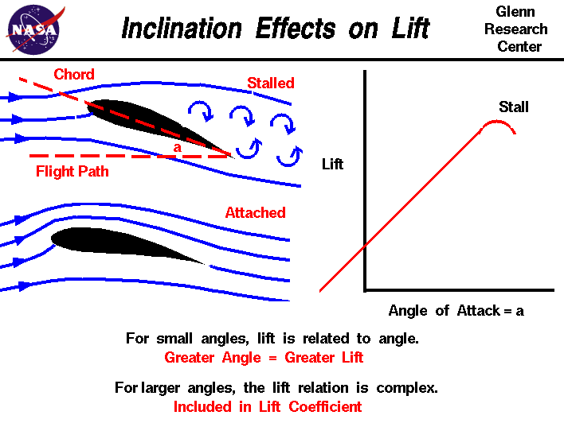

By Ritvik Agarwal
The major reason for the lift is the creation of a high-pressure zone below the wing surface and a low-pressure zone above it. Though, the air pressure in the region around the wingtip is approximately normal. As the lift increases these pressure differences become quite significant. At this stage, air from the high pressure zone below the wing rushes towards the normal-pressured zone while the air from the normal-pressured zone rushes towards the low-pressure zone over the wing.
The air is set in this cyclic motion and remains so long after the aircraft has passed that region. This cyclic motion of air causes a lot of induced drag. A lot of mechanical energy is transferred from the aircraft to the air, thus set in motion.
On a side note, these vortices are especially dangerous for small aircrafts which may pass through them. This is because this circular motion of air can set the plane into a spin, thus causing the pilot to lose control of the plane. To prevent the formation of these vortices, a small extension called winglet is attached to the wingtips. These extensions are installed at a certain angle to the the wing(usually obtuse to avoid adding anhedral character to the wing). Winglets help because they obstruct this cyclic flow of air. They also produce some lift in the process. Thus the induced drag from wingtip vortices is reduced to almost zero while producing some lift too. There exist winglets such that they block the airflow between both the regions, namely above and below the plane, reducing drag and adding to lift even more. Stall angle is the angle of attack at which the speed of the aircraft becomes low enough such that the lift generated becomes less than the weight of the aircraft. In such a case all control surfaces are ineffective because all control surfaces are dependant on the airflow over them which becomes increasingly small as the aircraft enters into a stall.
Mathematically, aspect ratio is the ratio of square of wingspan to the area of the planform. Hence, a wing with high span and small chord has a high aspect ratio as compared to a wing with small span and long chord.